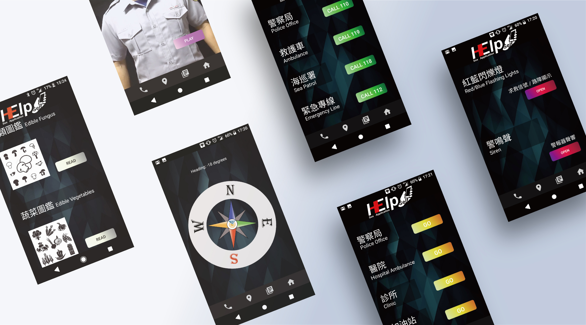

Design

個人網頁 Banner
大學網頁設計課程時所製作的個人Banner，圖片中自己拿著一台底片相機，背景以具有科技感的圖片襯底，呈現出資訊結合設計的感覺
Design
Help Self APP UI
放視大賞參賽作品圖片設計，UI設計理念: 使User用者在遇及突發狀況時可精準而無誤差的點擊需要使用的功能，因此整體配色彩跳色風格，大膽呈現
Design

Help Self APP UI
放視大賞參賽作品圖片設計，UI設計理念: 使User用者在遇及突發狀況時可精準而無誤差的點擊需要使用的功能，因此整體配色彩跳色風格，大膽呈現